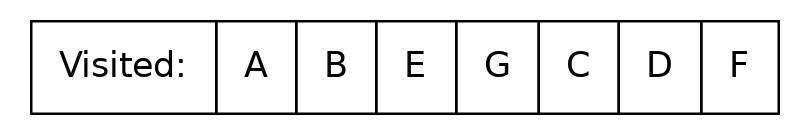

Visitor Pattern
My assumptions
Students are familiar with basics of Java language.
We are using the latest Java LTS version (21 as of 2023)Students already have encountered UML class and sequence diagrams previously in the course.
We have already covered basic data structures (in particular, stack, queue, and deque) and their implementations in the standard Java library.
One of my examples involves a parser generated from a formal grammar specification.
It’s an open question if formal grammars and parsers are in scope of this course.
Topics Covered / Learning Outcomes
Understanding the motivation and structure of the Visitor pattern.
Implementation examples:
An abstract example involving graph traversal.
A practical example focusing on visualizing the syntax tree and interpreting code represented as a syntax tree.
Insights into building a simple transpiler/code interpreter using the Visitor pattern.
A Practical Task
TAKE… | …TRANSFORM INTO |
|
A very important specific case
Take AST (abstract synthax tree) of parsed code and
verify the correctness of code (e. g. that all the variables are defined and all the types are compatible)
compile it into machine code
execute (interpret) the code without compilation
Naive approach: add methods to the class?
Program program = Program.parse(....);
//These are methods of class Program
program.verify();
program.compile();
program.execute();Drawback: too many responsibilities for Program class. Impossible to maintain and extend.
Separation of responisibilities: Visitor pattern
Data Structure | Visitor |
|
|
Classes and their methods
Order of calling
What is the simplest visitor pattern implementation?
//This is the data structure
Collection<T> collection = ...;
//Consumer<? super T> parameter is the visitor
collection.forEach (element -> {
//do anything with each element
})accept(Visitor)isforEach(Consumer)lambda (as an object) is the Visitor
lambda’s method is the Visitor’s
visit
Example 1: graph traversal
Data structure defines the traversal order: BFS
 |
Data structure defines the traversal order: BFS
Data structure defines the traversal order: BFS
Data structure defines the traversal order: BFS
Data structure defines the traversal order: BFS
Data structure defines the traversal order: BFS
Data structure defines the traversal order: BFS
 | 
|
Data structure defines the traversal order: DFS
Data structure defines the traversal order: DFS
 |
Data structure defines the traversal order: DFS
 |
Data structure defines the traversal order: DFS
Data structure defines the traversal order: DFS
Data structure defines the traversal order: DFS
Data structure defines the traversal order: DFS
Stack can be external or internal! |
Example 2. Let’s implement a simple language
|
Quadratic equation root formula
\[\huge
\frac {-b - \sqrt {b^2- 4ac}} {2 a}\] | In our "language": |
Let’s do two things
Visualize | Calculate |
 | Let’s solve \(x^2 + 2024x + 2023 = 0\) (Evaluate the formula for \(a = 1, b = 2024, c = 2023\)). |
Evaluating the formula
 |
Evaluating the formula
Evaluating the formula
Evaluating the formula
Evaluating the formula
 |
TODO
Visitor using Java 21 pattern matching feature
Warning
Do not use pattern matching outside of visitor pattern (as a substitute of polymorphism)
TODO: example
Main takeaways
Visitor pattern separates responsibilities between data structure and processor (visitor).
Data structure implements
accept(Visitor), visitor implementsvisit(Element).Depth-first traversal utilizing recursive calls on each of the elements of data structure is a common way to implement the pattern on the data structure side.
There can be multiple visitors implemented for different tasks.